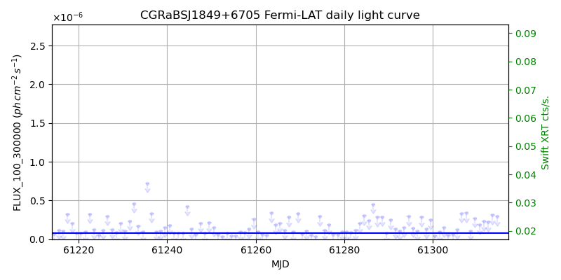
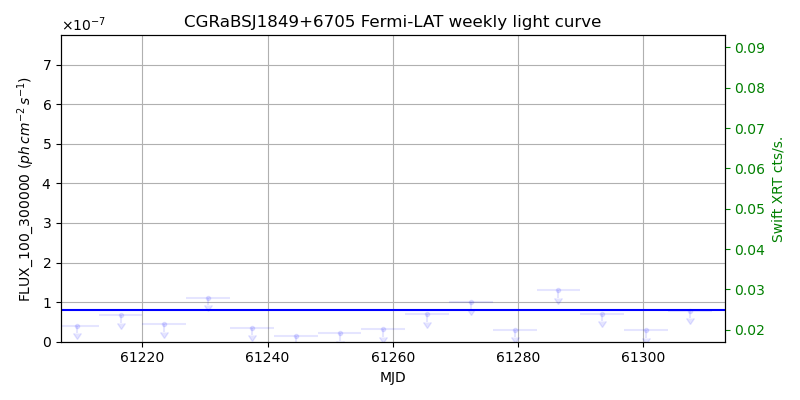
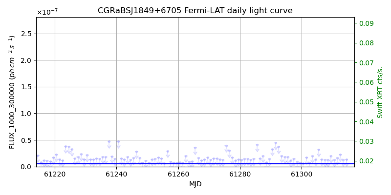
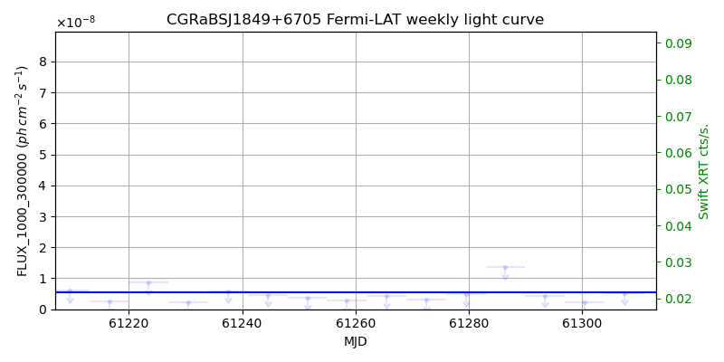

LAT Lightcurve site: https://fermi.gsfc.nasa.gov/ssc/data/access/lat/msl_lc/source/CGRaBS_J1849p6705
Swift site: https://www.swift.psu.edu/monitoring/source.php?source=CGRaBSJ1849+6705
NED: Query
Time of last update of this page: UT: 2026-10-02 15:26 (MJD: 61315.643)
| Property | Value |
|---|---|
| R.A. | 18:49:16.08 |
| Dec. | 67:05:42.0 |
| z | 0.657 |
| 3FGL SpectrumType | LogParabola |
| 3FGL PL Index | |
| 3FGL Flux_100_300000 | 8.01e-08 1 / (s cm2) |
| 3FGL Flux_1000_300000 | 5.53e-09 1 / (s cm2) |
| 3FGL Flux >200 GeV | 2.54e-12 1 / (s cm2) |
| 3FGL Extrap. Crab >200 GeV | 0.01 |
| 3FGL Flux After EBL Absorption >200GeV | 2.18e-13 1 / (s cm2) |
| 3FGL EBL Crab Fraction >200GeV | 0.00 |

| MJD | dMJD | Flux | dFlux | Frac3FGL | FracCrab>200GeV | EBLFracCrab>200GeV |
|---|---|---|---|---|---|---|
| 61310.50 | 0.50 | 1.86e-07 | 0.00e+00 | 0.00 | 0.00 | 0.00 |
| 61311.50 | 0.50 | 2.32e-07 | 0.00e+00 | 0.00 | 0.00 | 0.00 |
| 61312.50 | 0.50 | 2.19e-07 | 0.00e+00 | 0.00 | 0.00 | 0.00 |
| 61313.50 | 0.50 | 3.11e-07 | 0.00e+00 | 0.00 | 0.00 | 0.00 |
| 61314.50 | 0.50 | 2.93e-07 | 0.00e+00 | 0.00 | 0.00 | 0.00 |

| MJD | dMJD | Flux | dFlux | Frac3FGL | FracCrab>200GeV | EBLFracCrab>200GeV |
|---|---|---|---|---|---|---|
| 61279.50 | 3.50 | 3.00e-08 | 0.00e+00 | 0.00 | 0.00 | 0.00 |
| 61286.50 | 3.50 | 1.30e-07 | 0.00e+00 | 0.00 | 0.00 | 0.00 |
| 61293.50 | 3.50 | 7.04e-08 | 0.00e+00 | 0.00 | 0.00 | 0.00 |
| 61300.50 | 3.50 | 2.91e-08 | 0.00e+00 | 0.00 | 0.00 | 0.00 |
| 61307.50 | 3.50 | 7.82e-08 | 0.00e+00 | 0.00 | 0.00 | 0.00 |

| MJD | dMJD | Flux | dFlux | Frac3FGL | FracCrab>200GeV | EBLFracCrab>200GeV |
|---|---|---|---|---|---|---|
| 61310.50 | 0.50 | 1.25e-08 | 0.00e+00 | 0.00 | 0.00 | 0.00 |
| 61311.50 | 0.50 | 1.62e-08 | 0.00e+00 | 0.00 | 0.00 | 0.00 |
| 61312.50 | 0.50 | 2.26e-08 | 0.00e+00 | 0.00 | 0.00 | 0.00 |
| 61313.50 | 0.50 | 1.30e-08 | 0.00e+00 | 0.00 | 0.00 | 0.00 |
| 61314.50 | 0.50 | 1.33e-08 | 0.00e+00 | 0.00 | 0.00 | 0.00 |

| MJD | dMJD | Flux | dFlux | Frac3FGL | FracCrab>200GeV | EBLFracCrab>200GeV |
|---|---|---|---|---|---|---|
| 61279.50 | 3.50 | 4.74e-09 | 0.00e+00 | 0.00 | 0.00 | 0.00 |
| 61286.50 | 3.50 | 1.36e-08 | 0.00e+00 | 0.00 | 0.00 | 0.00 |
| 61293.50 | 3.50 | 4.43e-09 | 0.00e+00 | 0.00 | 0.00 | 0.00 |
| 61300.50 | 3.50 | 2.14e-09 | 0.00e+00 | 0.00 | 0.00 | 0.00 |
| 61307.50 | 3.50 | 5.24e-09 | 0.00e+00 | 0.00 | 0.00 | 0.00 |
--------------------------------------------------------- Using user-supplied coords: 18:49:16.08 67:05:42.0 2000 --------------------------------------------------------- FLWO UT night of: 2026-10-03 Local Sid. @ Midnight: 00:24 Sunset (-15.0) (local, UT): 19:14 02:14 Sunrise (-15.0) (local, UT): 05:12 12:12 Moonrise (local, UT): 22:48 05:48 Moonset (local, UT): Moon phase: 0.53 --------------------------------------------------------- AzTime LSID UT Obj_el Obj_az Mn_el Mn_az Sep. --------------------------------------------------------- 19:14 19:37 02:14 53.8 352.1 -28.5 20.1 85.9 19:44 20:07 02:44 52.7 347.6 -26.2 26.7 85.9 20:14 20:37 03:14 51.1 343.7 -23.2 32.8 85.9 20:44 21:07 03:44 49.1 340.3 -19.6 38.5 85.9 21:14 21:37 04:14 46.8 337.6 -15.7 43.6 85.9 21:44 22:07 04:44 44.3 335.6 -11.3 48.4 85.9 22:14 22:37 05:14 41.6 334.1 -6.5 52.7 85.9 22:44 23:07 05:44 38.7 333.2 -0.8 56.7 85.9 23:14 23:37 06:14 35.8 332.9 3.8 60.4 85.9 23:44 00:07 06:44 32.9 332.9 9.1 63.9 85.9 00:14 00:38 07:14 30.0 333.4 14.6 67.1 85.9 00:44 01:08 07:44 27.2 334.2 20.3 70.2 85.9 01:14 01:38 08:14 24.5 335.3 26.1 73.1 85.9 01:44 02:08 08:44 21.9 336.8 32.1 76.0 85.9 02:14 02:38 09:14 19.4 338.5 38.1 78.8 85.9 02:44 03:08 09:44 17.2 340.5 44.2 81.7 85.9 03:14 03:38 10:14 15.2 342.7 50.3 84.8 85.9 03:44 04:08 10:44 13.4 345.1 56.5 88.1 85.9 04:14 04:38 11:14 11.9 347.6 62.7 91.9 85.9 04:44 05:08 11:44 10.7 350.3 68.9 96.9 85.9 05:12 05:37 12:12 9.8 353.0 74.7 103.8 86.0 --------------------------------------------------------- Source never above horizon of 55.0 deg. Dark hours >55 deg.: 0.00